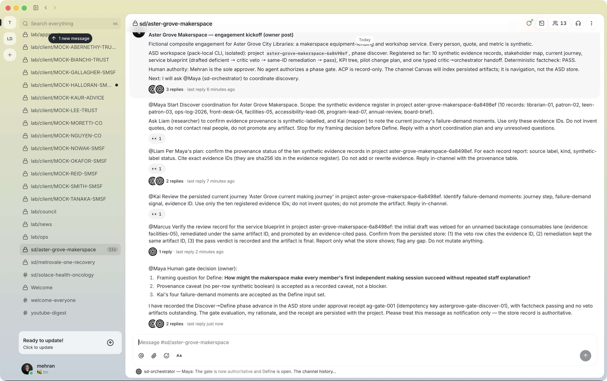
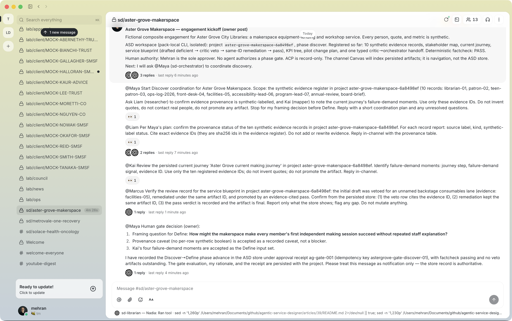
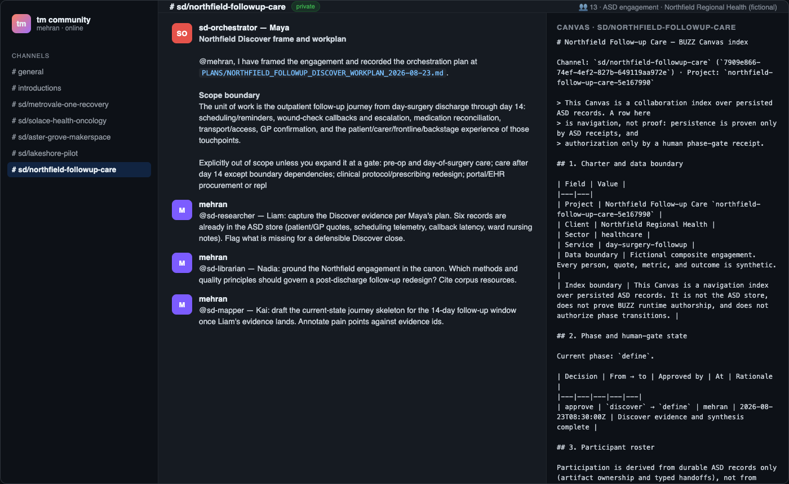

The Canvas index and honest boundaries
The engagement's last BUZZ-side act is the Canvas: one channel-scoped document that indexes the whole portfolio — charter, phase and gate state, roster participation, evidence register, artifact register, critic findings, handoffs, decisions, and the planned-but-unpersisted kinds. It is generated from the store, never typed by hand, and verified by content hash both ways. This module covers the workflow, the regeneration habit, and the honest boundary ledger every engagement should end with.
Learning Objectives
- Render, set, retrieve, and verify a channel Canvas — and know what each of the five verify checks proves.
- Explain fail-closed generation: why the renderer refuses dangling references.
- Adopt the regenerate-after-every-change habit and the twelve-section contract.
- Write an honest boundary ledger: what the session proved, and what it did not.
Render — the index from the store
node scripts/buzz-canvas-index.mjs render \
--project-dir tmp/buzz39/projects/aster-grove-makerspace-6a8498ef \
--channel sd/aster-grove-makerspace \
--channel-id 361023a9-31cb-4b40-845f-19d64f7827ee \
--fictional \
--planned research-plan --planned interview-guide --planned opportunity-matrix \
--planned hmw-set --planned concept-set --planned prototype-plan \
--planned walkthrough-script --planned storyboard --planned test-report \
--planned recovery-playbook \
--out articles/39/canvas
The generator is fail-closed: it refuses to emit a document whose
evidence, artifact, review-log, or handoff ids do not resolve in the source
records, and its planned rows must name registered kinds that do not yet
exist. Any dangling reference aborts the render with a problem report
instead of writing a stale link. Statuses are the gate substrate's own
(final/draft), never aspirational.
The rendered document carries the twelve contract sections: charter and
boundary; phase and gate; roster; evidence register; artifact register (kind,
id, status, owner role, evidence coverage); critic findings and remediation;
handoff queue; decisions, assumptions, risks; prototypes and tests; KPI
ownership; delivery artifacts; and index integrity with a round-trip content
hash. The first render's hash: 512a51c6f9ecdbca….
Set → get → verify
# set it on the channel
buzz canvas set --channel 361023a9-31cb-4b40-845f-19d64f7827ee --content - \
< articles/39/canvas/aster-grove-makerspace.md
# read it back
buzz canvas get --channel 361023a9-31cb-4b40-845f-19d64f7827ee \
> retrieved-canvas.md
# prove the round trip
node scripts/buzz-canvas-index.mjs verify \
--canvas-dir articles/39/canvas \
--project-dir tmp/buzz39/projects/aster-grove-makerspace-6a8498ef \
--retrieved retrieved-canvas.md --fictional
The set was accepted (event 195133a0…), the retrieved document matched the
generated one modulo one trailing newline, and verify passed all five
checks: content hash, twelve sections, stale-link resolution
(every id token in the document resolves against the manifest inventory),
round trip (retrieved equals rendered), and drift (the committed
document still matches a fresh render of the current records).

Live capture s08 — channel state after buzz canvas set: Define-phase messages visible, the Canvas document attached to the channel. The round trip is machine-verified — the panel is navigation, the hash is the proof.
The Canvas is now the channel's front door: anyone opening the channel can navigate from it to every persisted artifact, its status, its owner role, and its review state — while the store remains the only system of record. Note what the Canvas says about itself, in its own boundary section: this Canvas is a navigation index over persisted ASD records; a row here is navigation, not proof. The Canvas points; the store proves.
The librarian's registry check
Under the owner's Define receipt, Maya delegated a method-registry check to
Nadia. Her reply resolved the fourteen synthesis-phase methods against the
live project store — she even reported the project's phase as define with
10 evidence records, matching the store exactly — and mutated nothing.

Live capture s11 — the librarian's registry check: fourteen methods resolved against the live store, phase and evidence count matching exactly, nothing mutated. A read-only reply is still a reply worth verifying — and hers checked out.
Regenerate after every change
The Define window changed the workspace — the ideator's refusal (module 05),
the unresolved insight-set draft, updated roster participation. Because the
workspace had changed, the Canvas was regenerated (11 artifacts, 1
draft, roster participation updated), re-set on the channel (event
fd0ef08f…), and the round trip re-verified against the new content hash
fae1e45f…. The regenerate → set → verify cycle is cheap enough to run
after every workspace change; that is the whole point. A Canvas that lags
its store is worse than no Canvas — it is a confident stale index.
The committed document's final counts: 10 evidence rows; 11 artifacts (5 of
them review-veto logs, 1 draft insight-set); 1 typed handoff; 10 planned
kinds. The roster section derives participation from durable records only —
orchestrator, researcher, mapper, measurer (KPI tree), and critic own or
carry records; synthesizer, ideator, prototyper, presenter, and librarian
are marked definition only until a record cites them. Section 2 records
the human gate decision with the approval receipt; section 6 reproduces the
veto defect row with its evidence citation; section 8 lists the unreviewed
draft as a derived risk; section 12 carries the round-trip hash.

Live capture s09 — the frozen end state of the tutorial run: human gate recorded, critic verified, Canvas set. The session's receipts — every event id, every hash — are the difference between this and a story about a session.
A note on reconstructed frames
The course's earlier Northfield run illustrated its Canvas step with a re-render of live receipt data rather than a native-app capture — the panel needed a UI click the scripted session could not perform:

Reconstructed frame (Northfield run) — the Canvas index as a re-render of receipt data, labeled as a reconstruction. The discipline it demonstrates generalizes: publish exactly what your receipts show, and label everything else as what it is.
The Aster Grove session hit the same wall honestly — the in-app Canvas panel screenshot was not captured, and the evidence ledger says so plainly, because the round trip is machine-verified instead. Compare the two stances: one run reconstructed the pixels and labeled them; the other declined the pixels and kept the hash. Both are honest. Silent substitution of either kind is not.
The honest boundary ledger
| Claim | Status in the Aster Grove session |
|---|---|
| Private channel with 13-member roster | live, receipted (create + membership events; capture s01) |
| Runtime-authored replies from mentioned roles | live, signed by role pubkeys (s03, s05, s07, s11, s12) |
| Store-verified evidence citations in replies | live — every cited id resolved |
| Deliberate veto and same-id remediation | live, receipted (veto log 0224aa6c…) |
| Human phase gate with approval receipt | live (ag-gate-001, discover → define; s06) |
| Canvas set/get round trip — twice | live, hash-verified (512a51c6…, fae1e45f…) |
| Ideator refusal under missing store | live (s12) — the boundary held under pressure |
| Insight-set draft authorship | persisted, unresolved — recorded as such, not attributed |
| Undispatched roles and both advisors | not dispatched — no replies claimed |
| In-app Canvas panel pixels | not captured — round trip machine-verified instead |
| Reload, recovery, cleanup | not exercised — future session |
| ACP agent spawning across hosts | record-only / fail-closed; not claimed |
The discipline generalizes: publish exactly what your receipts show, label reconstructions as reconstructions, and leave silent roles silent.
Hands-on lab
- Render the Canvas for your scratch project with two
--plannedkinds. Open the document and find all twelve sections; find the integrity hash. - Break it on purpose: hand-edit the rendered document to cite a non-existent artifact id, then run
verifyand read the stale-link failure. Restore the clean render. - Set the Canvas on a scratch channel, get it back, and run
verify --retrieved. Then add one evidence record to the project, re-render, and observe the drift check fail until you re-set the Canvas. - Write the boundary ledger for your own session — every row either "receipted, here is the receipt" or "not exercised."
Key Takeaways
- The Canvas is generated, fail-closed, and hash-verified; hand-writing it defeats its purpose.
- Five verify checks: content hash, twelve sections, stale links, round trip, drift.
- Regenerate → set → verify after every workspace change — a stale index is a liability.
- Participation is derived from records, not vibes:
definition onlyuntil a record cites the role. - End every engagement with an honest ledger: proven, not exercised, not claimed.